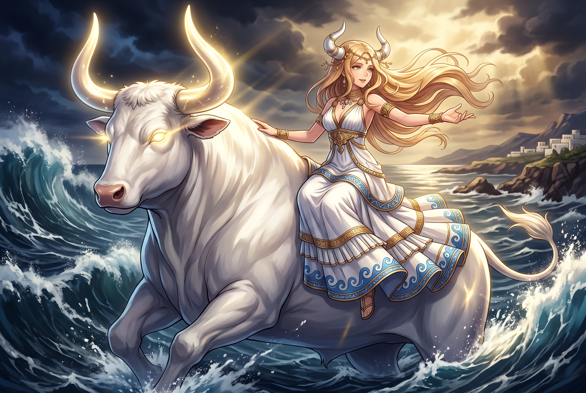

The Authentic Orthography
Personified Continent of Europe · Broad-faced (from εὐρύς + ὤψ)

Unicode restoration and ASCII comparison
Εὐρώπη
The name in its original Greek form. Eurṓpē (Εὐρώπη) is attested in the source tradition — “Broad-faced (from εὐρύς + ὤψ)”. Its long vowels and acute accents carry the full phonetic and orthographic weight of the source tradition.
europe
Reduced to plain europe, the name loses everything that made it specific: long vowels and acute accents. What remains is an ASCII string that machines can parse but that no longer speaks with its original voice.
Eurṓpē
The Unicode restoration recovers what ASCII flattened. Eurṓpē restores long vowels and acute accents, returning the name to its original written dignity. The domain encodes to Punycode, but the browser displays the truth.
Eurṓpē.com → xn--eurp-eva0406b.com
The non-ASCII characters in Eurṓpē are encoded while the ASCII remains visible. To the DNS, it is Punycode. To humanity, it is Eurṓpē.
How Eurṓpē travels from ancient script to the modern URL
Greek Εὐρώπη; from εὐρύς “wide" + ὤψ “face, eye", hence “broad-faced".
Personified Continent of Europe
The Unicode restoration Eurṓpē preserves Greek stress and length; the ASCII form europe loses these features.
How Eurṓpē was spoken
The domain of Eurṓpē
In the greek location tradition, Eurṓpē governed personified continent of europe. The name encodes a sphere of power that shaped ritual, narrative, and social order.
Zeus took the form of a white bull and carried the Phoenician princess Eurṓpē across the sea to Crete.
The land that received her took her name, making Europe a mythic body as well as a geographical space.
Eurṓpē bore Minos, Rhadamanthys, and Sarpedon, founding the Cretan dynasty and a judge of the dead.
Europe lay where the sun set; its name may echo a Semitic word for "west," the realm of the setting sun.
Stories of Eurṓpē
Eurṓpē begins as a Phoenician princess of extraordinary beauty and ends as the name of an entire continent. Her story is one of divine abduction and transformation: Zeus, smitten, takes the form of a white bull and carries her across the sea from Tyre to Crete. What begins as violence becomes foundation myth, for Europa becomes the mother of the kings and judges who shape the earliest Greek understanding of justice and law. The very name of the continent, whether derived from the heroine or from a Semitic word for the setting sun, thus preserves the memory of a Phoenician girl who crossed the sea and founded a dynasty. The name Europe eventually named the continent west of the Aegean. Phoenician traders, Greek colonists, and Roman administrators carried the term across the Mediterranean until it became the medieval and modern designation for the peninsula that would shape Western Christendom. The mythic bull-riding princess thus gave her name to a civilization that never forgot its Eastern origins.
Europa was gathering flowers with her companions on the Phoenician shore when a great white bull appeared among the herds. Its hide was gleaming, its horns were shaped like a crescent moon, and its breath smelled of crocuses. The princess trusted the beast enough to climb onto its back. At once it bolted into the sea and swam westward, pursued by Europa's frightened companions along the beach until the bull and its rider vanished over the waves.
The bull was Zeus. He carried Europa across the Mediterranean to Crete, where he revealed himself in a sacred grove near Gortyn. There she became the mother of Minos, Rhadamanthys, and Sarpedon. Minos would rule Crete and establish the labyrinth; Rhadamanthys would become one of the judges of the dead; and Sarpedon would fight at Troy. A single abduction thus generated the mythic charter for Cretan kingship and afterlife justice.
The continent that received the Phoenician princess took her name. Herodotus and later writers regularly derive Eurṓpē from the heroine, pairing her with Asia and Libya as the three named continents of the inhabited world. The etymology probably does not hold: the name may be Semitic, possibly meaning 'dark' or 'western,' or it may reflect the Greek sense that the land lay opposite the rising sun.
Yet the mythic derivation mattered more than philological accuracy. It allowed Greeks to imagine Europe as a place linked by marriage to Zeus and by blood to the Cretan dynasties. The continent was not merely geography but a family inheritance, shaped by the same divine desires that shaped cities and royal houses.
In Greek vase-painting, the scene of Europa on the bull became a favorite image of crossing and transformation. She rides sidesaddle, one hand gripping the bull's horn, her veil streaming behind her as dolphins leap beneath the waves. The bull's calm strength contrasts with the terror of abduction, turning the scene into an emblem of divine election rather than mere violence.
Roman and later European artists reinterpreted the myth as an allegory of continent personified. Europa, seated on the bull, became a standard figure in maps and emblems, until her name outgrew the story entirely. Today the continent is named for a Phoenician girl who, in one version of the tale, became a queen of Crete and the ancestress of European civilization.
Names are not merely labels; they are compressed worlds. Eurṓpē carries within it a greek location understanding of broad-faced (from εὐρύς + ὤψ). Unicode restoration returns that world to readable form.
Enter Extended Lore